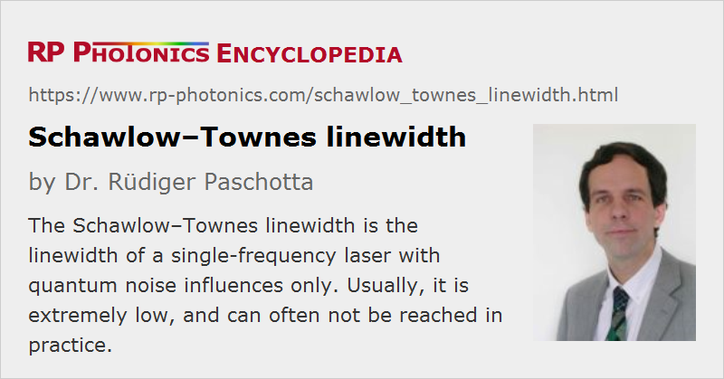

Schawlow–Townes Linewidth
Definition: linewidth of a single-frequency laser with quantum noise only
More general term: linewidth
German: Schawlow-Townes-Linienbreite
Categories: lasers, quantum optics, fluctuations and noise
How to cite the article; suggest additional literature
Author: Dr. Rüdiger Paschotta
Even before the first laser was experimentally demonstrated, Schawlow and Townes calculated the fundamental (quantum) limit for the linewidth of a laser []. This lead to the famous Schawlow–Townes equation:
with the photon energy h ν, the resonator bandwidth Δν2.9979e8 (half width at half-maximum, HWHM), and the output power Pout. It has been assumed that there are no parasitic cavity losses. Note that the result is interpreted as a half width at half-maximum.
Later, Melvin Lax showed that the linewidth in lasing operation (above the threshold pump power) must be two times smaller than derived by Schawlow and Townes [2]. If we take into account that factor 1 / 2 and also convert the linewidth values to full width at half maximum (FWHM) (for both the laser linewidth and the cavity linewidth), we obtain the modified linewidth equation

A more general form of the equation [6, 7] is
where Toc denotes the output coupler transmission, ltot the total resonator losses (which may be larger than Toc), Trt the resonator round-trip time, and θ the spontaneous emission factor, which takes into account increased spontaneous emission in (quasi-)three-level gain media.
The corresponding two-sided power spectral density of the phase noise is
This corresponds to white frequency noise with
Essentially, the Schawlow–Townes linewidth is determined by the strength of fluctuations of the optical phase which are caused by quantum noise. It is often claimed that the phase noise level corresponding to the Schawlow–Townes linewidth is a result of spontaneous emission into the laser mode. Although this picture is intuitive, it is not completely correct. Both the laser gain and the linear losses of the laser resonator contribute equal amounts of quantum noise to the intracavity light field. This means that even when replacing laser gain with some noiseless amplification process, the phase noise would only decrease to half of the Schawlow–Townes value [3].
Carefully constructed solid-state lasers can have very small linewidths in the region of a few kilohertz, which is still far above their Schawlow–Townes limit: technical excess noise makes it very difficult to reach that limit.
The linewidth of semiconductor lasers is also normally much larger than according to the original equation (without the α factor):
- There is also a spontaneous emission factor, e.g. of the order of 2 or 3, due to reabsorption in the semiconductor.
- More importantly, there are strong amplitude-to-phase coupling effects, which can be quantified with the linewidth enhancement factor α and can increase the linewidth by more than an order of magnitude.
- In addition, there can be excess noise with 1 / f-type shape of the power spectral density of the instantaneous frequency. This is related to fluctuations of the charge carriers in the semiconductor.
- Particularly for external-cavity diode lasers, there can also be significant excess noise due to mechanical vibrations.
Application to Mode-locked Lasers
Interestingly, the Schawlow–Townes formula can be applied even to actively mode-locked lasers [4], using the total average power (rather than the power in a particular line of the frequency comb) for Pout. The latter rule may be surprising, but it can be understood considering that the phases of the individual lines in the optical spectrum can not evolve independently; they are locked together by the modulator. (Otherwise, the circulating pulse would fall apart.)
A further generalization is possible for passively mode-locked lasers [5]. Here, the Schawlow–Townes formula provides an estimate for the linewidth near the center of the spectrum, whereas the linewidth in the spectral wings is somewhat increased due to quantum-noise-induced timing jitter. Note, however, that the nonlinear dynamics occurring in many passively mode-locked lasers can lead to strong excess noise, invalidating the Schawlow–Townes results for such cases.
Questions and Comments from Users
Here you can submit questions and comments. As far as they get accepted by the author, they will appear above this paragraph together with the author’s answer. The author will decide on acceptance based on certain criteria. Essentially, the issue must be of sufficiently broad interest.
Please do not enter personal data here; we would otherwise delete it soon. (See also our privacy declaration.) If you wish to receive personal feedback or consultancy from the author, please contact him e.g. via e-mail.
By submitting the information, you give your consent to the potential publication of your inputs on our website according to our rules. (If you later retract your consent, we will delete those inputs.) As your inputs are first reviewed by the author, they may be published with some delay.
Bibliography
| [1] | A. L. Schawlow and C. H. Townes, “Infrared and optical masers”, Phys. Rev. 112 (6), 1940 (1958), doi:10.1103/PhysRev.112.1940 (contains the famous Schawlow–Townes equation) |
| [2] | M. Lax, “Classical Noise. V. Noise in Self-Sustained Oscillators”, Phys. Rev. 160 (2), 290 (1967), doi:10.1103/PhysRev.160.290 |
| [3] | H. M. Wiseman, “Light amplification without stimulated emission: beyond the standard quantum limit to the laser linewidth”, Phys. Rev. A 60 (5), 4083 (1999), doi:10.1103/PhysRevA.60.4083 |
| [4] | P.-T. Ho, “Phase an amplitude fluctuations in a mode-locked laser”, IEEE J. Quantum Electron. 21 (11), 1806 (1985), doi:10.1109/JQE.1985.1072594 |
| [5] | R. Paschotta et al., “Optical phase noise and carrier–envelope offset noise of mode-locked lasers”, Appl. Phys. B 82 (2), 265 (2006), doi:10.1007/s00340-005-2041-9 |
| [6] | R. Paschotta, "Derivation of the Schawlow–Townes linewidth" |
| [7] | R. Paschotta, H. R. Telle, and U. Keller, “Noise of Solid State Lasers”, in Solid-State Lasers and Applications (ed. A. Sennaroglu), CRC Press, Boca Raton, FL (2007), Chapter 12, pp. 473–510 |
See also: linewidth, linewidth enhancement factor, laser noise
and other articles in the categories lasers, quantum optics, fluctuations and noise
|  |
If you like this page, please share the link with your friends and colleagues, e.g. via social media:
These sharing buttons are implemented in a privacy-friendly way!